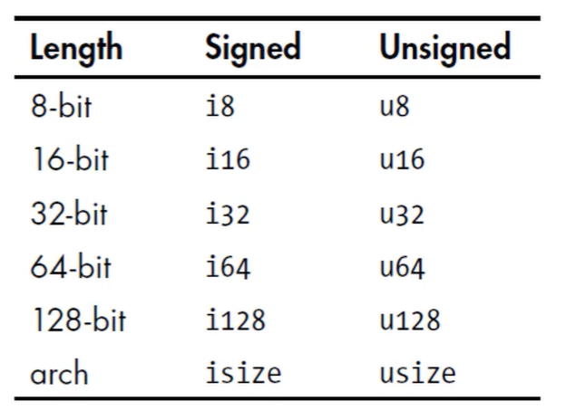
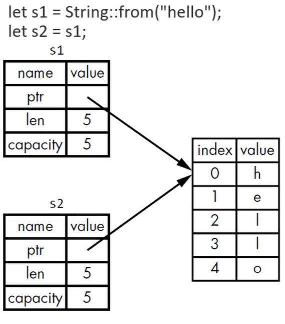
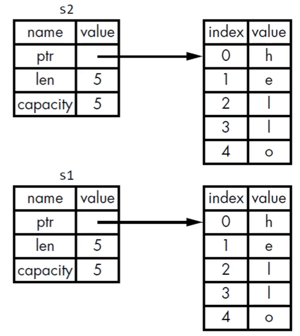
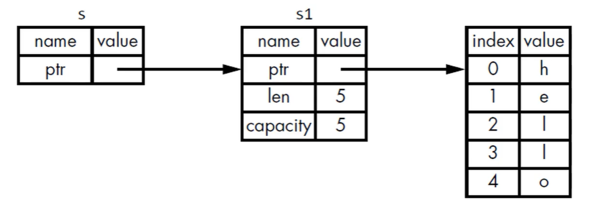

本文最后更新于 2024-02-08T15:04:04+00:00
rust笔记
第一章:rust环境
安装rust
windows
在官网 https://www.rust-lang.org/ 下载，即可自动安装
linux/Mac
1 curl https://sh.rustup.rs -sSf | sh
更新rust
卸载rust
查看rust版本
使用本地浏览器离线查看rust文档
hello_world
文件命名规范：小写字母，下划线作空格，后缀名.rs
1 2 3 fn main (){println! ("Hello world!" );
编译
运行(windows)
Cargo
Cargo 是 Rust的构建系统和包管理工具
构建代码、下载依赖的库、构建这些库…
安装 Rust 的时候会安装 Cargo，检查cargo的版本
使用cargo创建项目
项目名称是 hello_cargo
会创建一个新的目录 hello_cargo
Cargo.toml
src 目录
初始化了一个新的Git仓库, .gitignore
Cargo.toml
TOML (Tom’s Obvious, Minimal Language)格式,是Cargo的配置格式
[pacakge],是一个区域标题,表示下方内容是用来配置包(package)的
1 2 3 4 5 6 7 8 9 10 [package] name = "hello_cargo" version = "0.1.0" edition = "2021" authors = ["cjl <alittletest01@outlook.com>" ] [dependencies]
[dependencies],另一个区域的开始
它会列出项目的依赖项。在 Rust 里面，代码的包称作 crate。
cargo 生成的 main.rs 在 src 目录下
而Cargo.toml在项目顶层下
源代码都应该在 src 目录下
顶层目录可以放置: README、许可信息、配置文件和其它与程序源码无关的文件
如果创建项目时没有使用cargo,也可以把项目转化为使用cargo:
把源代码文件移动到 src 下
创建 Cargo.toml 并填写相应的配置
构建Cargo项目
会在target/debug/ 生成可执行文件
第一次运行 cargo build 会在顶层目录生成 cargo.lock 文件
该文件负责追踪项目依赖的精确版本
不需要手动修改该文件
构建并运行cargo项目
检查代码 ,确保能通过编译,但是不产生任何可执行文件
cargo check 要比 cargo build 快得多
编写代码的时候可以连续反复的使用cargo check检查代码,提高效率
为发布构建
编译时会进行优化代码
会运行的更快，但是编译时间更长
会在 target/release 而不是 target/debug 生成可执行文件
第二章:初识rust:
你会在本章看到一个猜数程序的例子，感受rust语言的特点
其中具体的语法会在第三章开始逐一详细解释
一次猜测
1 2 3 4 5 6 7 8 9 10 11 12 use std::io;fn main () {println! ("猜数！" );println! ("猜测一个数" );let mut foo =1 ;2 ;let bar =foo;let mut guess = String ::new ();stdin ().read_line (&mut guess).expect ("无法读取行" );println! ("你猜测的数是:{}" ,guess);
可以在https://crates.io/crates 查看rust的库
添加rand库
在Cargo.toml修改以下内容
1 2 [dependencies] rand = "0.3.14"
生成神秘数字并猜测
1 2 3 4 5 6 7 8 9 10 11 12 13 14 15 16 17 18 19 20 21 22 use std::{cmp::Ordering, io};use rand::Rng;fn main () {println! ("猜数！" );let secret_number = rand::thread_rng ().gen_range (1 , 101 );println! ("神秘数字是:{}" ,secret_number);println! ("猜测一个数" );let mut guess = String ::new ();stdin ().read_line (&mut guess).expect ("无法读取行" );let guess : u32 = guess.trim ().parse ().expect ("Please type a number" );println! ("您猜测的数是:{}" ,guess);match guess.cmp (&secret_number){println! ("Too small!" ),println! ("Too big" ),println! ("You win" ),
允许多次猜测
1 2 3 4 5 6 7 8 9 10 11 12 13 14 15 16 17 18 19 20 21 22 23 24 25 26 27 28 29 30 31 use std::{cmp::Ordering, io};use rand::Rng;fn main () {println! ("猜数！" );let secret_number = rand::thread_rng ().gen_range (1 , 101 );loop println! ("猜测一个数" );let mut guess = String ::new ();stdin ().read_line (&mut guess).expect ("无法读取行" );let guess : u32 = match guess.trim ().parse (){Ok (num)=>num,Err (_)=>continue ,println! ("您猜测的数是:{}" ,guess);match guess.cmp (&secret_number){println! ("Too small!" ),println! ("Too big" ),println! ("You win!" );break ;
第三章:通用的编程概念
变量与可变性
变量
声明变量使用 let 关键字
默认情况下,变量是不可变的(Immutable)
声明变量时，在变量前面加上 mut，就可以使变量可变。
常量
常量(constant) ,常量在绑定值以后也是不可变的,但是它与不可变的变量有很多区别：
不可以使用 mut，常量永远都是不可变的
声明常量使用 const关键字，它的类型必须被标注
常量可以在任何作用域内进行声明，包括全局作用域
常量只可以绑定到常量表达式，无法绑定到函数的调用结果或只能在运行时才能计算出的值
在程序运行期间,常量在其声明的作用域内一直有效
命名规范:Rust 里常量使用全大写字母，每个单词之间用下划线分开，例如:
MAX_POINTS
例子:
1 const MAX_POINTS : u32 = 100_000
隐藏(shadowing)
可以使用相同的名字声明新的变量,新的变量就会shadow (隐藏)之前声明的同名变量
shadow 和把变量标记为 mut 是不一样的：
如果不使用let关键字,那么重新给非mut的变量赋值会导致编译时错误
而使用let声明的同名新变量,也是不可变的
使用 let 声明的同名新变量，它的类型可以与之前不同
示例代码:
1 2 3 4 5 6 fn main () {let x = 5 ;let x = x + 1 ;let x = x * 2 ;println! ("The value of x is {}" , x);
小提示: 使用shift+alt+F可以格式化代码
1 2 3 4 5 fn main () {let spaces = " " ;let spaces = spaces.len ();println! ("{}" , spaces);
数据类型:标量类型
Rust是静态编译语言,在编译时必须知道所有变量的类型
基于使用的值,编译器通常能够推断出它的具体类型
但如果可能的类型比较多(例如把String转为整数的parse方法) ,就必须添加类型的标注,否则编译会报错
例如:
1 2 3 4 fn main () {let guess : i32 = "42" .parse ().expect ("not a number" );
小提示: 使用shift+alt+↑或shift+alt+↓可以复制当前行的代码
一个标量类型代表一个单个的值
Rust 有四个主要的标量类型：
整数类型

arch是architecture的缩写，isize和usize的位数由程序所运行的计算机架构决定，使用 isize 或 usize 的主要场景是对某种集合进行索引操作。
整数字面值
除了byte类型外,所有的数值字面值都允许使用类型后缀，例如57u8
如果你不太清楚应该使用那种类型,可以使用Rust相应的默认类型:
整数的默认类型就是 i32: 总体上来说速度很快,即使在64位系统中
整数溢出
例如:U8 的范围是 0-255，如果你把一个 U8 变量的值设为 256，那么：
浮点类型
Rust有两种基础的浮点类型,也就是含有小数部分的类型
Rust的浮点类型使用了IEEE-754标准来表述，f64是默认类型, 因为在现代CPU上f64和f32的速度差不多,而且精度更高。
rust的加减乘除取余操作和其他语言是一样的
布尔类型
Rust的布尔类型也有两个值: true和false
一个字节大小
符号是 bool
字符类型
Rust 语言中 char 类型被用来描述语言中最基础的单个字符。
字符类型的字面值使用单引号
占用4字节大小
是Unicode标量值,可以表示比ASCIl 多得多的字符内容:拼音、中日韩文、零长度空白字符、emoji 表情等。
U+0000 到 U+D7FF
U+E000 到 U+10FFFF
但Unicode中并没有“字符”的概念,所以直觉上认为的字符也许与Rust中的概念并不相符
1 2 3 4 5 fn main () {let x = 'z' ;let y = '字' ;let z = '🦀';
数据类型:复合类型
tuple
用小括号包围, 逗号分隔, 长度固定, 和python的元组相同
1 2 3 4 5 6 7 8 9 fn main () {let tup : (i32 , f64 , u8 ) = (500 , 6.4 , 1 );println! ("{},{},{}" , tup.0 , tup.1 , tup.2 );let (x, y, z) = tup;println! ("{},{},{}" , x, y, z);
数组
数组也可以将多个值放在一个类型里
数组中每个元素的类型必须相同
数组的长度也是固定的
数组的用处
如果想让你的数据存放在stack (栈)上而不是heap (堆)上,或者想保证有固定数量的元素,这时使用数组更有好处
数组没有Vector灵活(以后再讲)。
Vector 和数组类似，它由标准库提供
Vector 的长度可以改变
如果你不确定应该用数组还是 Vector，那么估计你应该用 Vector。
1 2 3 4 5 6 7 8 9 10 11 12 fn main () {let a1 = [1 , 2 , 3 , 4 , 5 ];let a2 = [1 ; 5 ]; println! ("{}" , a1[1 ]);let b = a2[a1[4 ]];println! ("{}" , b); let c = [1 , 2 , 3 ];
可以看出,rust在编译的时候只会对数组越界作简单的检查
函数和注释
1 2 3 4 5 6 7 8 9 10 fn main () {let a = test01 (4 );println! ("{}" , a);fn test01 (x: i32 ) -> i32 {println! ("this is function" );5
注释的方法有//和/* xxx */
if-else
1 2 3 4 5 6 7 8 9 10 11 12 fn main () {let num = 6 ;if num % 4 == 0 {println! ("number is divisible by 4" );else if num % 3 == 0 {println! ("number is divisible by 3" );else if num % 2 == 0 {println! ("number is divisible by 2" );else {println! ("number is not divisible by 4,3,2" );
值得注意的是,if语句只允许接收bool语句作为条件, if 1是不合法的
当if-else较多时,建议使用match重构代码
1 2 3 4 5 6 fn main () {let condition = true ;let a = if condition { 5 } else { 6 };println! ("{}" , a);
循环
loop
1 2 3 4 5 6 7 8 9 fn main () {let mut counter = 0 ;let result = loop {1 ;if counter == 10 {break counter * 2 ;
while
1 2 3 4 5 6 7 8 fn main () {let mut num =3 ;while num !=0 {println! ("{}" ,num);1 ;println! ("LIFTOFF!" );
for
1 2 3 4 5 6 7 fn main () {let arr = [1 , 2 , 4 , 8 ];for a in arr.iter () {println! ("{}" , a);
1 2 3 4 5 6 fn main () {for num in (1 ..4 ).rev () {println! ("{}" , num);println! ("LIFTOFF!" );
第四章:所有权
Rust 的核心特性就是所有权
所有程序在运行时都必须管理它们使用计算机内存的方式
有些语言有垃圾收集机制,在程序运行时,它们会不断地寻找不再使用的内存
在其他语言中,程序员必须显式地分配和释放内存
Rust 采用了第三种方式：
内存是通过一个所有权系统来管理的，其中包含一组编译器在编译时检查的规则。
当程序运行时,所有权特性不会减慢程序的运行速度。
Stack vs heap
计组的内容,这里略
所有权解决的问题：
跟踪代码的哪些部分正在使用 heap 的哪些数据
最小化heap上的重复数据量
清理 heap上未使用的数据以避免空间不足。
一旦你懂的了所有权，那么就不需要经常去想 stack 或 heap 了。
但是知道管理 heap数据是所有权存在的原因，这有助于解释它为什么会这样工作。
所有权规则,内存与分配
所有权规则
每个值都有一个变量,这个变量是该值的所有者
每个值同时只能有一个所有者
当所有者超出作用域(scope)时,该值将被删除。
内存与分配
1 2 3 4 5 fn main () {let mut s = String ::from ("hello" );push_str (",world" );println! ("{}" , s);
字符串字面值,在编译时就知道它的内容了,其文本内容直接被硬编码到最终的可执行文件里
String类型,为了支持可变性,需要在heap上分配内存来保存编译时未知的文本内容：
操作系统必须在运行时来请求内存,这步通过调用 String::from 来实现
当用完 String 之后，需要使用某种方式将内存返回给操作系统
这步，在拥有 GC的语言中，GC会跟踪并清理不再使用的内存
没有GC,就需要我们去识别内存何时不再使用,并调用代码将它返回。
如果忘了，那就浪费内存。
如果提前做了，变量就会非法
如果做了两次，也是Bug。必须一次分配对应一次释放
Rust采用了不同的方式:对于某个值来说,当拥有它的变量走出作用范围时,内存会立即自动的交还给操作系统。(例子)
string的移动
一个String 由3部分组成:
一个指向存放字符串内容的内存的指针
一个长度
一个容量
上面这些东西放在stack上。存放字符串内容的部分在heap上
长度len,就是存放字符串内容所需的字节数
容量 capacity是指String从操作系统总共申请的内存
当执行下面的代码以移动string 时

为了保证内存安全：
Rust没有尝试复制被分配的内存
Rust 让 s1 失效。当 s1 离开作用域的时候， Rust 不需要释放任何东西
你也许会将复制指针、长度、容量视为浅拷贝,但由于Rust让s1失效了,所以我们用一个新的术语:移动(Move)
隐含的一个设计原则: Rust不会自动创建数据的深拷贝, 就运行时性能而言,任何自动赋值的操作都是廉价的
string的克隆
1 2 3 4 5 fn main () {let s1 = String ::from ("hello" );let s2 = s1.clone ();println! ("{},{}" , s1, s2);

拥有Copy trait的类型
任何简单标量的组合类型都可以是 Copy的
任何需要分配内存或某种资源的都不是 Copy 的
一些拥有 Copy trait 的类型：
所有的整数类型，例如 u32
bool
char
所有的浮点类型，例如 f64
Tuple (元组) ,如果其所有的字段都是Copy的
(i32, String) 不是
(i32, i32) 是
所有权和函数
函数在传入值和返回值的过程中都会发生所有权的转移
1 2 3 4 5 6 7 8 9 10 11 12 fn main () {let s1 = gives_ownership ();let s2 = String ::from ("hello" );let s3 = takes_and_gives_back (s2);fn gives_ownership () -> String {let some_string = String ::from ("hello" );fn takes_and_gives_back (a_string: String ) -> String {
引用和借用
&符号就表示引用:允许你引用某些值而不取得其所有权
引用默认是不可变的, 可变引用可以修改引用的数据,写作&mut

1 2 3 4 5 6 7 8 9 10 fn main () {let mut s1 = String ::from ("hello" );let len = calculate_length (&mut s1);println! ("The length of {} is {}" , s1, len);fn calculate_length (s: &mut String ) -> usize {push_str (",world!" );len ()
1 The length of hello,world! is 12
可变引用有一个重要的限制:在特定作用域内,对某一块数据,只能有一个可变的引用。这样做的好处是可在编译时防止数据竞争。
在任意给定时间，要么只能有一个可变引用，要么只能有任意数量的不可变引用。
1 2 3 4 5 6 fn main () {let mut s = String ::from ("hello" );let r1 = &s; let r2 = &mut s; println! ("{}, {}" , r1, r2);
以下三种行为下会发生数据竞争:
两个或多个指针同时访问同一个数据
至少有一个指针用于写入数据
没有使用任何机制来同步对数据的访问
可以通过创建新的作用域，来允许非同时的创建多个可变引用
1 2 3 4 5 6 7 fn main () {let mut s = String ::from ("hello" );let s1 = &mut s;let s2 = &mut s;
悬空引用: Dangling References
在 Rust 里，编译器可保证引用永远都不是悬空引用：如果你引用了某些数据，编译器将保证在引用离开作用域之前数据不会离开作用域,否则会报错
1 2 3 4 5 6 7 8 fn main () {let r = dangle ();fn dangle () -> &String {let s = String ::from ("hello" );
切片
切片(slice),是另外一种不持有所有权的数据类型
字符串切片的使用
1 2 3 4 5 6 7 8 9 10 11 fn main () {let s = String ::from ("hello world" );let hello = &s[..5 ];let world = &s[6 ..];let whole = &s[..];let llo = &s[2 ..5 ];println! ("{}" , hello);println! ("{}" , world);println! ("{}" , whole);println! ("{}" , llo);
定义一个函数，实现找到字符串的第一个单词
1 2 3 4 5 6 7 8 9 10 11 12 13 14 15 fn main () {let mut s = String ::from ("hello world" );let word = first_word (&s);clear ();println! ("{}" , word);fn first_word (s: &String ) -> &str {let bytes = s.as_bytes ();for (i, &item) in bytes.iter ().enumerate () {if item == b' ' {return &s[..i];
定义函数时使用字符串切片来代替字符串引用会使我们的API更加通用,且不会损失任何功能。
1 2 3 4 5 6 7 8 9 10 11 12 13 14 15 fn main () {let mut my_string = String ::from ("hello world" );let wordIndex = first_word (&my_string[..]);let my_string_literal = "hello world" ;let wordIndex = first_word (my_string_literal);fn first_word (s: &str ) -> &str {let bytes = s.as_bytes ();for (i, &item) in bytes.iter ().enumerate () {if item == b' ' {return &s[..i];
第五章: struct
定义和实例化struct
1 2 3 4 5 6 7 8 9 10 11 12 13 14 15 16 17 18 19 20 21 22 23 24 25 26 27 28 struct User {String ,String ,u64 ,bool ,struct Color (i32 , i32 , i32 );fn main () {let user1 = User {String ::from ("cjl@algorithmpark.xyz" ),String ::from ("cjl" ),true ,114514 ,println! ("{}" , user1.active);let user2 = User {String ::from ("root@algorithmpark.xyz" ),String ::from ("root" ),let black = Color (0 , 0 , 0 );
如果字段使用了String而不是&str:
该 struct 实例拥有其所有的数据
只要 struct 实例是有效的，那么里面的字段数据也是有效的
struct里也可以存放引用,但这需要使用生命周期(以后讲)。
生命周期保证只要 struct实例是有效的,那么里面的引用也是有效的。
如果 struct 里面存储引用，而不使用生命周期，就会报错（例子)。
结构体案例：长方形
1 2 3 4 5 6 7 8 9 10 11 12 13 14 15 16 #[derive(Debug)] struct Rectangle {u32 ,u32 ,fn main () {let rect = Rectangle {30 ,50 ,println! ("{}" , area (&rect));println! ("{:#?}" , rect);fn area (rect: &Rectangle) -> u32 {
1 2 3 4 5 1500 Rectangle {width: 30 ,length: 50 ,
结构体方法
使用impl块定义方法
1 2 3 4 5 6 7 8 9 10 11 12 13 14 15 16 17 18 19 #[derive(Debug)] struct Rectangle {u32 ,u32 ,impl Rectangle {fn area (&self ) -> u32 {self .length * self .widthfn main () {let rect = Rectangle {30 ,50 ,println! ("{}" , rect.area ());println! ("{:#?}" , rect);
1 2 3 4 5 1500 Rectangle {width: 30 ,length: 50 ,
如果不传入self,可以实现构造函数
1 2 3 4 5 6 7 8 9 10 11 12 13 14 15 16 17 #[derive(Debug)] struct Rectangle {u32 ,u32 ,impl Rectangle {fn square (size: u32 ) -> Rectangle {fn main () {let rect = Rectangle::square (5 );println! ("{:#?}" , rect);
第六章:枚举类型
定义枚举
1 2 3 4 5 6 7 8 9 10 11 12 13 enum IpAddrKind {fn main () {let four = IpAddrKind::V4;let six = IpAddrKind::V6;route (four);route (six);route (IpAddrKind::V4);fn route (ip_kind: IpAddrKind) {}
将数据附加到枚举的变体中
1 2 3 4 5 6 7 8 enum IpAddrKind {V4 (u8 ,u8 ,u8 ,u8 ),V6 (String ),fn main (){let home = IpAddrKind::V4 (127 , 0 , 0 , 1 );let loopback = IpAddrKind::V6 (String ::from ("::1" ));
更加复杂的例子：
1 2 3 4 5 6 7 8 9 10 11 12 13 14 15 16 17 18 enum Message {i32 , y: i32 },Write (String ),ChangeColor (i32 , i32 , i32 ),impl Message {fn call (&self ) {}fn main () {let q = Message::Quit;let m = Message::Move { x: 12 , y: 24 };let w = Message::Write (String ::from ("Hello" ));let c = Message::ChangeColor (0 , 255 , 255 );call ();
option枚举
标准库中的定义
1 2 3 4 enum Option <T>{Some (T),None ,
它包含在Prelude(预导入模块)中，可以直接使用
1 2 3 4 5 fn main (){let x :i8 =5 ;let y :Option <i8 > =Some (5 );let sum =x+y;
Option的作用是作为null，因为它的类型无法和正常的类型计算，它可以避免和null作计算
match
1 2 3 4 5 6 7 8 9 10 11 12 13 14 15 16 17 18 19 20 enum Coin {fn value_in_cents (coin: Coin) -> u8 {match coin {println! ("Penny!" );1 5 ,10 ,25 ,fn main () {println! ("{}" , value_in_cents (Coin::Penny));
绑定值的模式匹配
1 2 3 4 5 6 7 8 9 10 11 12 13 14 15 16 17 18 19 20 21 22 23 24 25 26 27 28 29 #[derive(Debug)] enum UsState {enum Coin {Quarter (UsState),fn value_in_cents (coin: Coin) -> u8 {match coin {println! ("Penny!" );1 5 ,10 ,Quarter (state) => {println! ("State quarter from {:?}!" , state);25 fn main () {let c = Coin::Quarter (UsState::Alaska);println! ("{}" , value_in_cents (c));
1 2 State quarter from Alaska!25
match 要求枚举所有的可能, 如果没有全部枚举, 会报错
可以使用_表示通配剩余的情况
1 2 3 4 5 6 7 8 9 10 fn main () {let v = 0u8 ;match v {1 => println! ("one" ),3 => println! ("three" ),5 => println! ("five" ),7 => println! ("seven" ),
if let
if let 可以作为一种特殊的match的简写
1 2 3 4 5 6 7 8 9 10 11 fn main () {let v = Some (0u8 );match v {Some (3 ) => println! ("three" ),if let Some (3 ) = v {println! ("three" );
if let可以搭配else
1 2 3 4 5 6 7 8 9 10 11 12 13 fn main () {let v = Some (0u8 );match v {Some (3 ) => println! ("three" ),println! ("others" ),if let Some (3 ) = v {println! ("three" );else {println! ("others" );
第七章: 模块系统
package,Crate,Module
代码组织主要包括：
哪些细节可以暴露，哪些细节是私有的
作用域内哪些名称有效
模块系统
Package（包）：Cargo 的特性，让你构建、测试、共享 crate
Crate （单元包）：一个模块树，它可产生一个 library 或可执行文件
Module (模块)、use：让你控制代码的组织、作用域、私有路径
Path (路径) :为struct、function或 module等项命名的方式
Crate 的类型：
Crate Root:
是源代码文件
Rust 编译器从这里开始，组成你的 Crate 的根 Module
一个 Package :
包含1个Cargo.toml,它描述了如何构建这些 Crates
只能包含 0-1 个 library crate
可以包含任意数量的 binary crate
但必须至少包含一个 crate （library 或 binary)
未完待续